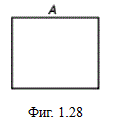
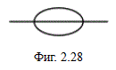
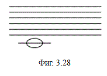

Отче наш.
Изпейте „Сила жива!“
Какво означава думата „учен човек“? Имате понятие за учения човек, който знае много. Не е невежа, не е прост. А има и едно друго разбиране за учения човек: учен човек е онзи, който постоянно изправя своите погрешки.

/Фиг. 1.28/ Елементарна азбука. Как се определя точката? Точката в обикновен смисъл, е място отдето ти трябва да тръгваш. Пътят, който си извървял, това е права линия. Разширението на тази права линия какво образува? Значи, каква е идеята, когато излизаш от точката? – От една точка ти се стремиш да бъдеш до друга точка. В ума ти седи само една идея. От една точка до друга точка се образува права линия, образува се отношение. Питам тогава: Ако в дадения случай, като тръгваш, имаш в ума си две точки, ще се образува ли права линия? Щом имаш две точки в ума си, какво ще се образува тогава? Правя геометрически разсъждения. Казвате: „Това е лесна работа“. За да се образува една площ, какви условия трябват? За да добие една идея във вас широчина, какво се се изисква от нея? Или, ако на вас ви дадат идеята да определите какво нещо е време, какво нещо е пространство, как ще определите времето и пространството? По видимому много елементарни работи, много лесни работи. Във времето станало някакво събитие. Пространство – мястото, дето е станало.
Та казвам: От идеята за точката вие вече имате едно напрежение. Щом имаш едно напрежение в себе си, нещо неопределено. Какво нещо е точката в човека? Как ще определиш, че имаш точка? За всяка една точка се казва, че не завзема никакво пространство. Ние казваме: „Ония неща, които не завземат никакво пространство, не съществуват“. Права ли е идеята? – Отчасти. Да кажем, ако нещата не завземат никакво пространство, без пространство, или извън пространството да живеем, как е тогава? Човек, като излезе из физическото пространство къде отива? Като напусне физическия свят, къде отива? Пространственият свят е физическият, духовният не е пространствен. Щом като излезеш из пространството, къде отиваш? Тогава каква е разликата между пространствено и непространствено? Сега кой ограничи пространството?

Сега да кажем имате една нота. /Фиг. 2.28/ Може ли да определите каква е тази нота? Може да бъде „си“, може да бъде „ла“, може да бъде „ми“, може да бъде „сол“. /Фиг. 3.28/ Това е петолинието.

То е една система, която служи за разбиране на някаква идея. Да имате вече една спомагателна линия. По какво се отличават ония ноти, които са на линията, от ония, които са между линията? Имате „ре“ /на/ междулинията, „фа“ е /на/ междулинието, „ла“, също „до“. Кои са на линията? Ако ги прекарате в една по-висока октава, къде ще падне „до“? – /На/ междулинието. Тогава всички, които са на линията във втората октава, ще бъдат /на/ междулинието. Онези, които са на междулинието, ще бъдат на линията. Тогава, каква е разликата между ония ноти, които са на линията и ония, които са между линията? Има разлика, разбира се. По какво се отличава „до“? Ако вземете трептенията на „до“ и трептенията на „ре“, се отличават. Ако аз ти пея „до“ на тебе, постоянно, в тебе ще се роди едно желание нещата да се разширяват, да разпуснеш някаква линия. Като ти пея „до“ ще се роди желание да премахнеш едно препятствие, което те ограничава. Затворен си, ще се зароди желание да излезеш от затвора. Ако ти пея „ре“, в тебе ще се роди желание да вървиш по права линия. Ако ти пея „ми“ в тебе ще се роди желание, като имаш известни мъчнотии, да се справиш с мъчнотиите. Като ти пея „до“, ти имаш желание, да разпръснеш мъчнотиите. Като ти пея „ми“, в тебе ще се роди желание да мислиш, като как да се справиш с мъчнотиите. Защото в „ми“ пак се повтаря мъчнотията на „до“, но в друга форма. И следователно, мъчнотията на „до“, ти в „ми“ може да я разрешиш. „Фа“ ще разреши мъчнотията на „ми“. Като влезеш в „ми“, имаш желание да събереш нещата, че да върви.
/Дойдоха двама стражари и казаха, че не е позволено да говори Учителят. Някакво недоразумение станало, защото ни беше позволено/.
Понякой път тренът се туря в крива посока на релсите.
Само светлият път на Мъдростта води към Истината!
В Истината е скрит животът!
Сега упражненията.
ХVII година
28 лекция на Младежкия окултен клас
държана от Учителя на 22. IV. 1938 г., петък, 5 ч.с.
София – Изгрев.
*На 15.IV.1938 г. в каталога на Елена Андреева не е отбелязяна лекция от Учителя